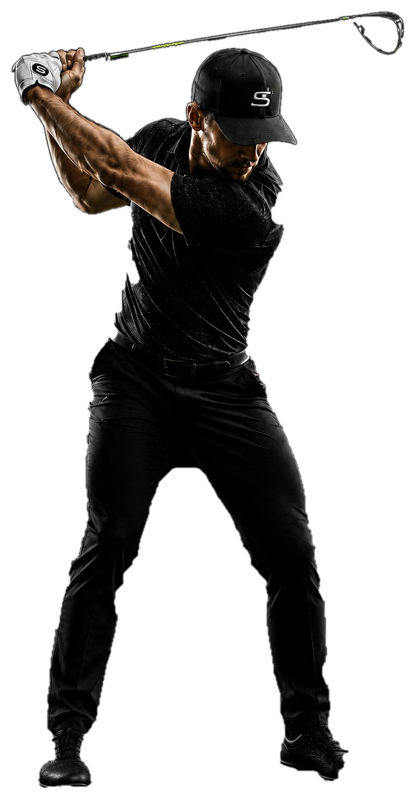

A better look at
your swing.
Review your video, capture key moments and see what changes as you practise.
No account needed. Your sessions stay on this device.

Review your video, capture key moments and see what changes as you practise.
No account needed. Your sessions stay on this device.
Ready for your next swing?
0 sessions this week
Upload or record your swing
Choose a clip from your gallery or record your swing. You can review it at your own pace.
Full body inside the frame.
Good light, low shadows.
Down-the-line view for automatic marking.
Local marking and phase review
Your video stays here. The local marker currently supports down-the-line swings. Confirm the proposed phases by watching the video. This version can propose phases for other movement; check that the clip contains one complete swing. Up to 60 seconds and 150 MB.
If the marks miss the swing, select a little before the backswing and after the finish. Times refer to the original video.
Pause at a key moment, then tap its phase to mark it.
Takeaway means the shaft is approximately horizontal on the backswing.
Address: Last stable setup frame before the continuous backswing; ignore waggles.
Takeaway: First backswing frame with the shaft approximately horizontal.
Top: Transition into the downswing; if there is a pause, use the last frame before descent.
Impact: First visible contact or ball departure. Leave unconfirmed when it cannot be seen.
Finish: First held final position after the follow-through. Do not substitute the end of the clip.
Save keeps windows around the proposed and corrected moments. Where source frame timing is readable, each window covers ±6 frames; otherwise it uses a labelled ±0.2 second window. The original video is already part of the saved session.
| Phase | Proposed | Current | Change |
|---|
Phase labels need visual confirmation
Confirm only after reviewing the five definitions. Later edits require confirmation again. Nothing trains or uploads automatically.
Manual review summary
Your key moments and notes, together.
Saved on this device
Manual comparison
Choose two saved sessions to compare their key moments.
Stored on this device
Videos, notes, captures and drawings are saved in this browser. Clearing history removes these sessions and their correction images from this device.
Compare local phase proposals with editable references. Videos stay on this device unless you explicitly send them to GLAB.
This test version reviews videos on this device. Accounts, cloud sync and automatic coaching are not connected.
Feedback stays on this device. Copy it to share with the person who invited you.
This feature will be connected in a later version.